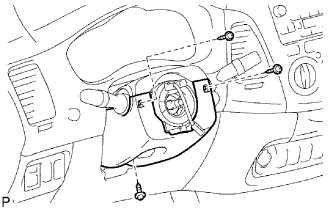

CÁP XOẮN > LẮP |
| 1. LẮP CÁP XOẮN |
Kiểm tra rằng các bánh xe trước hướng thẳng.
Đặt công tắc xinhan đến vị trí trung gian.
Lắp cáp xoắn.
Nối giắc nối vào cáp xoắn.
| 2. LẮP NẮP CHE PHÍA TRÊN TRỤC LÁI |
| 3. LẮP NẮP CHE PHÍA DƯỚI TRỤC LÁI |
|  |
Lắp nắp bằng 3 vít.
| 4. ĐẶT CÁP XOẮN |
Quay chậm cáp xoắn ngược chiều kim đồng hồ bằng tay cho đến khi cảm thấy chặt.
Quay cáp xoắn theo chiều kim đồng hồ khoảng 2.5 vòng để gióng thẳng các dấu.
| 5. LẮP CỤM VÔ LĂNG |
 |
Gióng thẳng các dấu ghi nhớ trên vô lăng và trục lái chính.
Lắp đai ốc bắt vô lăng.
| 6. LẮP CỤM MẶT VÔ LĂNG |
 |
Đỡ mặt vôlăng bằng một tay như trong hình vẽ.
Nối giắc túi khí.
Nối giắc nối còi.
Lắp mặt vôlăng sau khi xác nhận rằng rãnh trên chu vi của vít mắc vào vỏ vít.
Dùng chìa hoa khế T30, lắp 2 vít.
| 7. NỐI CÁP ÂM ẮC QUY |
| 8. KIỂM TRA CỤM MẶT VÔ LĂNG |
Thực hiện kiểm tra hệ thống chẩn đoán (Xem trang Kích chuột vào đây).
Với mặt vôlăng (có túi khí) tháo ra khỏi xe, hãy thực hiện kiểm tra bằng quan sát:
 |
| 9. TIẾN HÀNH THIẾT LẬP BAN ĐẦU |
TIẾN HÀNH THIẾT LẬP BAN ĐẦU (Xem trang Kích chuột vào đây).
| 10. KIỂM TRA ĐÈN CẢNH BÁO SRS |
Kiểm tra đèn báo SRS (Xem trang Kích chuột vào đây).
| 11. KIỂM TRA VỊ TRÍ VÔLĂNG |